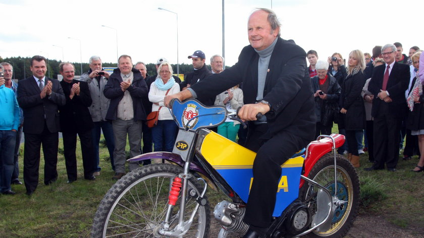

Jerzy Szczakiel - Historyczny Triumfator
Urodzony: 28 stycznia 1949, Witnica
Zmarł: 1 września 2020, Kędzierzyn-Koźle
Narodowość: Polska
Kariera: Startował w latach 1967-1979, związany głównie z Kolejarzem Opole.
Pierwszy Polski Indywidualny Mistrz Świata (1973)
Jerzy Szczakiel to postać wyjątkowa w historii polskiego żużla. Jest pierwszym Polakiem, który zdobył tytuł Indywidualnego Mistrza Świata na żużlu. Ten historyczny moment miał miejsce 2 września 1973 roku na Stadionie Śląskim w Chorzowie.
W finałowym biegu, w którym decydowały się losy złotego medalu, Szczakiel pokonał samego Ivana Maugera, ówczesną ikonę światowego żużla. Było to zwycięstwo, które przeszło do legendy i stało się kamieniem milowym dla rozwoju żużla w Polsce.
Kariera Klubowa i Inne Sukcesy
Przez całą swoją karierę Jerzy Szczakiel był związany z klubem Kolejarz Opole. Mimo że jego zwycięstwo w Mistrzostwach Świata było jedynym tak dużym indywidualnym sukcesem, to na stałe wpisał się w historię polskiego sportu. Był również wicemistrzem Polski par klubowych w 1971 roku.
Jego triumf w 1973 roku był ogromną niespodzianką, gdyż Szczakiel nie był faworytem zawodów. To właśnie ten element zaskoczenia i pokonanie największych gwiazd tamtych czasów sprawiły, że jego osiągnięcie było tak celebrowane i inspirujące.
Dziedzictwo
Jerzy Szczakiel na zawsze pozostanie symbolem wytrwałości i wiary w swoje możliwości. Jego zwycięstwo otworzyło drogę dla kolejnych polskich żużlowców i udowodniło, że polski żużel może konkurować z najlepszymi na świecie. Pamięć o nim i jego historycznym sukcesie jest żywa wśród kibiców do dziś.